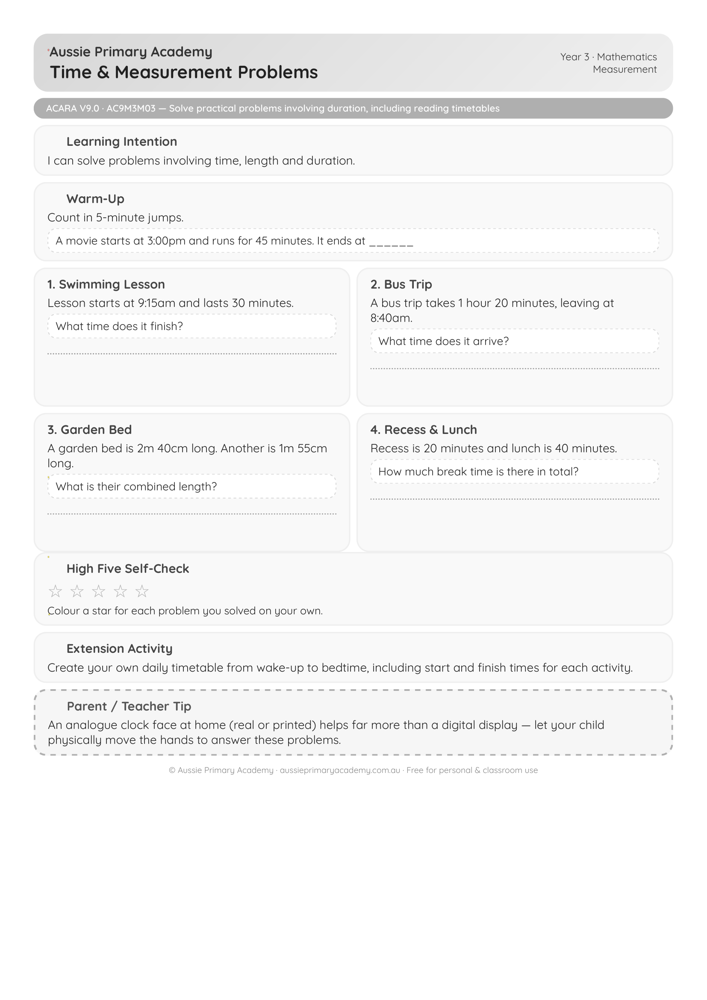

Year 3 · Maths · Measurement · Free Printable
Time, Duration and Length Measurement Problems
Solve practical problems involving time, duration, calendars and length measurement in everyday contexts.
Worksheet Preview

Learning Intention
Students will solve problems involving time duration, reading calendars, and measuring length using metres, centimetres and millimetres.
Australian Curriculum
AC9M3M03
Identify the date and determine the number of days between events using calendars, and interpret and use timetables involving time and length measurement.
Teacher Notes
Use real clocks, calendars and rulers. Link duration to daily routines and school timetables for better understanding.
Skills Practised
- Calculating time duration
- Reading calendars and timetables
- Measuring length
- Solving measurement word problems